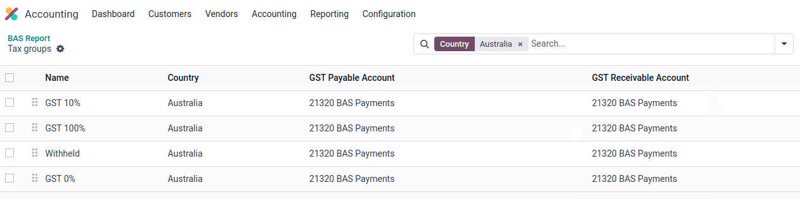
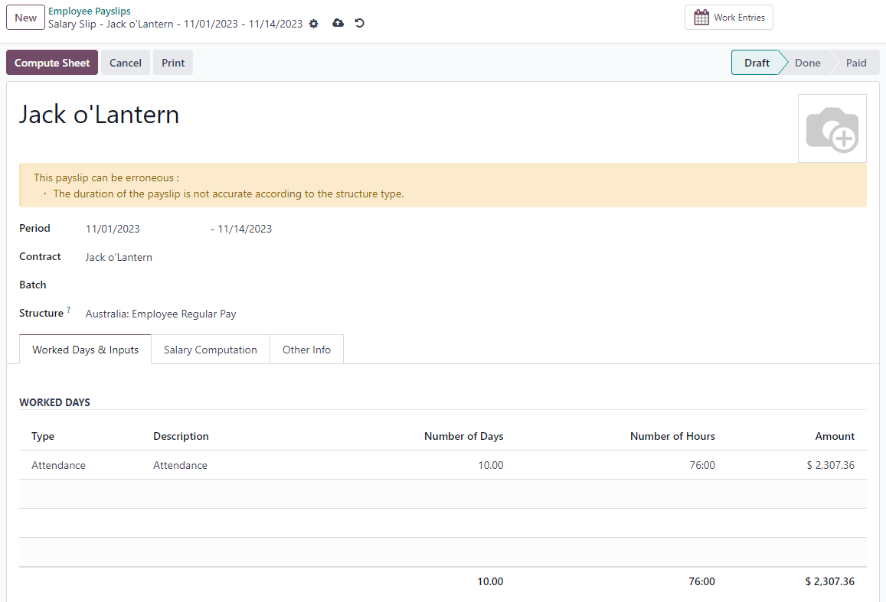

ประเทศออสเตรเลีย¶
การกำหนดค่า¶
ชื่อโมดูล |
คีย์โมดูล |
คำอธิบาย |
|---|---|---|
ประเทศออสเตรเลีย - ระบบบัญชี |
|
ติดตั้งตามค่าเริ่มต้นเมื่อแพ็คเกจระบบบัญชี การประยุกต์ใช้ทางการเงิน ถูกตั้งค่าเป็น ประเทศออสเตรเลีย โมดูลนี้ยังติดตั้งโมดูล การโอนเครดิต ABA และ รายงานคำแนะนำการโอนเงิน |
รายงานสำหรับประเทศออสเตรเลีย - ระบบบัญชี |
|
ประกอบด้วย รายงานประจำปีที่ต้องเสียภาษี (TPAR) และ รายงาน BAS |
ประเทศออสเตรเลีย - บัญชีเงินเดือน |
|
การประยุกต์ใช้บัญชีเงินเดือนสำหรับประเทศออสเตรเลีย |
ประเทศออสเตรเลีย - บัญชีเงินเดือนพร้อมระบบบัญชี |
|
ติดตั้งการเชื่อมโยงระหว่างบัญชีเงินเดือนและระบบบัญชีของประเทศออสเตรเลีย โมดูลยังติดตั้งโมดูล: ประเทศออสเตรเลีย - ระบบบัญชี; รายงานสำหรับประเทศออสเตรเลีย - ระบบบัญชี; และ ประเทศออสเตรเลีย - บัญชีเงินเดือน |
ใบแจ้งยอดลูกค้าทางบัญชี |
|
อนุญาตให้มีการจัดการและส่งใบแจ้งยอดลูกค้ารายเดือนจากบัญชีแยกประเภทคู่ค้าและแบบฟอร์มการติดต่อ และยังใช้ในประเทศนิวซีแลนด์อีกด้วย |
Employment Hero บัญชีเงินเดือนของประเทศออสเตรเลีย |
|
ประสานการดำเนินการจ่ายเงินทั้งหมดจาก Employment Hero กับรายการสมุดรายวันของ Odoo |
ผังบัญชี¶
ผังบัญชีของประเทศออสเตรเลียรวมอยู่ในโมดูล ประเทศออสเตรเลีย - ระบบบัญชี เพื่อเข้าถึง ให้ไปที่
See also
ภาษีและ GST¶
ภาษีเริ่มต้นของประเทศออสเตรเลียจะส่งผลต่อ รายงาน BAS ซึ่งสามารถเข้าถึงได้ผ่าน
ในประเทศออสเตรเลีย อัตรา ภาษีสินค้าและบริการ (GST) มาตรฐานคือ 10% แต่มีอัตราและการยกเว้นที่แตกต่างกันสำหรับสินค้าและบริการบางประเภท

การวางแผนภาษี¶
ภายในแพ็คเกจการประยุกต์ใช้สำหรับประเทศออสเตรเลีย ชื่อภาษีจะรวมอัตราภาษีไว้ด้วย โดยเป็นส่วนหนึ่งของแบบแผนการตั้งชื่อ
แม้จะมีภาษีใน Odoo เป็นจำนวนมาก แต่ภาษีเหล่านี้ก็ค่อนข้างใกล้เคียงกัน (ส่วนใหญ่เป็น 0% และ 10%) โดยมีตารางภาษีที่แตกต่างกันสำหรับ:
สินค้า
บริการ
TPAR
TPAR ที่ไม่มี ABN
See also
ภาษีที่มีการกล่าวถึง TPAR ไม่เพียงส่งผลกระทบต่อรายงาน BAS เท่านั้น แต่ยังรวมถึงรายงาน TPAR ด้วย ธุรกิจจากบางอุตสาหกรรมจำเป็นต้องรายงานการชำระเงินให้กับผู้รับเหมาช่วงจากบริการที่เกี่ยวข้องในระหว่างปีการเงิน Odoo รวมการใช้ภาษีและฐานะการเงินเพื่อรายงานการชำระเงินเหล่านี้ในรายงาน TPAR ภาษีที่มีการกล่าวถึง TPAR ที่ไม่มี ABN จะถูกใช้เพื่อบันทึกจำนวนเงินที่ถูกหักภาษี ณ ที่จ่ายจากผู้รับเหมาช่วงที่ไม่มี ABN สำหรับ ATO
See also
นี่คือภาษีสำหรับประเทศออสเตรเลียใน Odoo 17
ชื่อ GST |
คำอธิบาย |
ขอบเขต GST |
ประเภท GST |
|---|---|---|---|
10% |
การจัดซื้อ GST |
รายการที่ซื้อ |
|
10% INC |
การจัดซื้อแบบรวม GST |
รายการที่ซื้อ |
|
10% C |
การซื้อทุน |
รายการที่ซื้อ |
|
0% C |
การซื้อที่ได้รับคะแนนเป็นศูนย์ |
รายการที่ซื้อ |
|
100% T EX |
การจัดซื้อ (นำเข้าที่ต้องเสียภาษี) - ชำระภาษีแยกต่างหาก |
รายการที่ซื้อ |
|
10% I |
การจัดซื้อเพื่อการขายที่ต้องเสียภาษีซื้อ |
รายการที่ซื้อ |
|
10% P |
การซื้อเพื่อใช้ส่วนตัวหรือไม่สามารถหักลดหย่อนได้ |
รายการที่ซื้อ |
|
100% EX |
GST สำหรับการนำเข้าเท่านั้น |
รายการที่ซื้อ |
|
10% Adj |
การปรับภาษี (การจัดซื้อ) |
รายการที่ซื้อ |
|
10% |
การขาย GST |
การขาย |
|
10% INC |
การขายรวม GST |
การขาย |
|
0% EX |
ยอดขายเป็นศูนย์ (ส่งออก) |
การขาย |
|
ได้รับการยกเว้น 0% |
การขายที่ได้รับการยกเว้น |
การขาย |
|
0% I |
ป้อนข้อมูลการขายที่ต้องเสียภาษี |
การขาย |
|
10% Adj |
การปรับภาษี (การขาย) |
การขาย |
|
10% TPAR |
การจัดซื้อ GST |
บริการ |
รายการที่ซื้อ |
10% TPAR NO ABN |
การจัดซื้อ GST |
บริการ |
รายการที่ซื้อ |
10% INC TPAR |
การจัดซื้อแบบรวม GST |
บริการ |
รายการที่ซื้อ |
10% INC TPAR N ABN |
การจัดซื้อแบบรวม GST |
บริการ |
รายการที่ซื้อ |
10% C TPAR |
การซื้อทุน |
บริการ |
รายการที่ซื้อ |
10% C TPAR N ABN |
การซื้อทุน |
บริการ |
รายการที่ซื้อ |
0% C TPAR |
TPAR การซื้อที่ได้รับคะแนนเป็นศูนย์ |
บริการ |
รายการที่ซื้อ |
0% C TPAR N ABN |
TPAR การซื้อที่ได้รับคะแนนเป็นศูนย์โดยไม่มี ABN |
บริการ |
รายการที่ซื้อ |
100% T EX TPAR |
การจัดซื้อ (นำเข้าที่ต้องเสียภาษี) - ชำระภาษีแยกต่างหาก |
บริการ |
รายการที่ซื้อ |
100% T EX TPAR N ABN |
การจัดซื้อ (นำเข้าที่ต้องเสียภาษี) - ชำระภาษีแยกต่างหาก |
บริการ |
รายการที่ซื้อ |
10% I TPAR |
การจัดซื้อเพื่อการขายที่ต้องเสียภาษีซื้อ |
บริการ |
รายการที่ซื้อ |
100% I TPAR N ABN |
การจัดซื้อเพื่อการขายที่ต้องเสียภาษีซื้อ |
บริการ |
รายการที่ซื้อ |
10% P TPAR |
การซื้อเพื่อใช้ส่วนตัวหรือไม่สามารถหักลดหย่อนได้ |
บริการ |
รายการที่ซื้อ |
10% P TPAR N ABN |
การซื้อเพื่อใช้ส่วนตัวหรือไม่สามารถหักลดหย่อนได้ |
บริการ |
รายการที่ซื้อ |
100% EX TPAR |
GST สำหรับการนำเข้าเท่านั้น |
บริการ |
รายการที่ซื้อ |
100% EX TPAR N ABN |
GST สำหรับการนำเข้าเท่านั้น |
บริการ |
รายการที่ซื้อ |
10% Adj TPAR |
การปรับภาษี (การจัดซื้อ) |
บริการ |
รายการที่ซื้อ |
10% Adj TPAR N ABN |
การปรับภาษี (การจัดซื้อ) |
บริการ |
รายการที่ซื้อ |
47% WH |
ภาษีหัก ณ ที่จ่ายสำหรับคู่ค้าที่ไม่มี ABN |
บริการ |
รายการที่ซื้อ |
รายงาน BAS¶
รายงาน คำชี้แจงกิจกรรมทางธุรกิจ (BAS) เป็นข้อกำหนดการรายงานภาษีที่สำคัญสำหรับธุรกิจที่จดทะเบียนสำหรับ ภาษีสินค้าและบริการ (GST) ในประเทศออสเตรเลีย BAS ใช้เพื่อรายงานและนำส่งภาษีต่างๆ ไปยัง Australian Taxation Office (ATO) ด้วยฟีเจอร์ Odoo BAS ธุรกิจสามารถรายงานสิ่งต่อไปนี้ได้:
ภาษีสินค้าและบริการ (GST)
PAYG ภาษีหัก ณ ที่จ่าย
ภาษีสำหรับ GST จะถูกรวบรวมจาก ตารางภาษี ซึ่งได้รับการกำหนดค่าไว้ล่วงหน้าในระบบ ตารางภาษี ยังสามารถตั้งค่าด้วยตนเองสำหรับ GST พิเศษเพิ่มเติมใดๆ ได้อีกด้วย เมื่อตั้งค่าภาษีสำหรับแต่ละบัญชีแล้ว ระบบจะบันทึกรายการสมุดรายวันลงในประเภทภาษีที่ถูกต้องโดยอัตโนมัติ เพื่อให้แน่ใจว่ารายงาน BAS มีความถูกต้องและสะท้อนถึงกิจกรรมทางการเงินของธุรกิจ

นอกจากนี้ รายงาน BAS ยังรวมองค์ประกอบภาษีหัก ณ ที่จ่าย PAYG (W1 ถึง W5 จากนั้น สรุป ส่วนที่ 4) การผสานรวมนี้ช่วยให้แน่ใจว่าภาษีหัก ณ ที่จ่ายที่เกี่ยวข้องกับเงินเดือนทั้งหมดได้รับการบันทึกและแสดงไว้ในรายงานอย่างถูกต้อง

โมดูลนี้รวมกฎในตัวที่อำนวยความสะดวกในการคำนวณภาษีอัตโนมัติสำหรับประเภท W1 ถึง W5 สำหรับคำแนะนำโดยละเอียดและข้อมูลเพิ่มเติมเกี่ยวกับกระบวนการคำนวณภาษีเหล่านี้ โปรดดูเอกสารประกอบของแอปบัญชีเงินเดือน
See also
ปิดรายงาน BAS¶
เมื่อถึงเวลายื่นแบบแสดงรายการภาษีกับ ATO ให้คลิก ปิดรายการ คุณสามารถกำหนดค่าระยะเวลาการคืนภาษีได้ใน นอกจากนี้ คุณสามารถกำหนดวันที่เริ่มต้นของระยะเวลาคืนภาษีได้โดยใช้ ปุ่มช่วงเวลา (ทำเครื่องหมายด้วยไอคอนปฏิทิน 📅)
See also
Note
Odoo ใช้ ไตรมาสตามปฏิทิน แทนที่จะเป็นไตรมาสปีงบประมาณของประเทศออสเตรเลีย ซึ่งหมายความว่า เดือนกรกฎาคมถึงกันยายนคือไตรมาส 3 ใน Odoo
ก่อนที่จะปิดรายการเป็นครั้งแรก จะต้องตั้งค่าเริ่มต้น บัญชีเจ้าหนี้ GST และ บัญชีลูกหนี้ GST การแจ้งเตือนจะแสดงขึ้นและเปลี่ยนเส้นทางผู้ใช้ไปยังการตั้งค่าคอนฟิกของกลุ่มภาษี
เมื่อมีการตั้งค่าบัญชี บัญชีเจ้าหนี้ GST และ บัญชีลูกหนี้ GST แล้ว รายงาน BAS จะสร้างรายการปิดสมุดรายวันที่แม่นยำโดยอัตโนมัติ ซึ่งจะทำให้ยอดคงเหลือ GST สมดุลกับบัญชีหักล้าง GST
ยอดคงเหลือระหว่าง ลูกหนี้ GST และ เจ้าหนี้ จะถูกตั้งค่ากับบัญชีหักล้างภาษีที่กำหนดไว้ในกลุ่มภาษี จำนวนเงินที่ต้องชำระหรือได้รับจาก ATO สามารถกระทบยอดกับรายการเคลื่อนไหวของบัญชีธนาคารได้

Important
รายงาน BAS ไม่ได้ถูกส่งไปยัง ATO โดยตรง Odoo ช่วยให้คุณคำนวณค่าที่จำเป็นในแต่ละส่วนโดยอัตโนมัติ พร้อมความเป็นไปได้ในการตรวจสอบเพื่อทำความเข้าใจประวัติเบื้องหลังตัวเลขเหล่านี้ได้ดียิ่งขึ้น ธุรกิจสามารถคัดลอกค่าเหล่านี้และป้อนลงใน พอร์ทัลของ ATO
รายงาน TPA¶
Odoo ช่วยให้ธุรกิจรายงานการชำระเงินให้กับผู้รับเหมาหรือผู้รับเหมาช่วงในระหว่างปีการเงินได้ ซึ่งทำได้โดยสร้าง TPAR หากคุณไม่แน่ใจว่าธุรกิจของคุณต้องการรายงานนี้ โปรดดูเอกสารที่จัดทำโดย ATO คุณสามารถดูรายงานนี้ได้ใน
การกำหนดค่า¶
ใต้ หรือ เลือกผู้รับเหมาของคุณและตั้งค่า สถานะทางการเงิน ใต้แท็บ การขายและการซื้อ

เมื่อเรียกเก็บเงินผู้ติดต่อโดยตั้งค่าสถานะทางการเงินเป็น TPAR หรือ TPAR ที่ไม่มี ABN รายงานจะถูกสร้างขึ้นโดยอัตโนมัติใน
รายงานประกอบด้วย ABN, GST ทั้งหมด, จ่ายขั้นต้นแล้ว และ ภาษีหัก ณ ที่จ่าย จากผู้รับเหมาช่วง TPAR
GST ทั้งหมด: ภาษีทั้งหมดที่ชำระ
จำนวนเงินที่ชำระทั้งหมด: แสดงหลังจากลงทะเบียนการชำระเงินสำหรับใบเรียกเก็บเงินเหล่านั้น
หักภาษี ณ ที่จ่าย: แสดงว่าผู้รับเหมาช่วงลงทะเบียนด้วยตำแหน่งทางการเงินที่ตั้งค่าเป็น TPAR โดยไม่มี ABN
รายงาน TPAR สามารถส่งออกเป็นรูปแบบ PDF, XLSX และ TPAR ได้
ใบแจ้งยอดของลูกค้า¶
ใบแจ้งยอดลูกค้าช่วยให้ลูกค้าสามารถดูธุรกรรมทางการเงินของตนกับบริษัทในช่วงระยะเวลาหนึ่ง และรายละเอียดใบแจ้งยอดที่พ้นกำหนดชำระได้ ใบแจ้งยอดเหล่านี้สามารถส่งให้กับลูกค้าทางอีเมลได้

ลูกค้าสามารถดาวน์โหลดใบแจ้งยอดเหล่านี้ได้ สองวิธี
จากแบบฟอร์มติดต่อ: ใบแจ้งยอดลูกค้าอยู่ภายใต้ เลือกลูกค้า คลิก ไอคอนรูปเฟือง (⚙) จากนั้น พิมพ์ใบแจ้งยอดลูกค้า ซึ่งจะพิมพ์ใบแจ้งยอดตั้งแต่ต้นเดือนถึงวันนี้
จากบัญชีแยกประเภทคู่ค้า: ตัวเลือกนี้ช่วยให้มีความยืดหยุ่นมากขึ้นในการเลือกวันที่เริ่มต้นและสิ้นสุดของใบแจ้งยอด คุณสามารถเข้าถึงได้โดยไปที่ จากที่นี่ ระบุช่วงวันที่ใน เมนูปฏิทิน (📅) สำหรับใบแจ้งยอด วางเมาส์เหนือคู่ค้า แล้วคลิกแท็บ ใบแจ้งยอดของลูกค้า

คำแนะนำการโอนเงิน¶
ใบแจ้งการโอนเงินคือเอกสารที่ใช้เป็นหลักฐานการชำระเงินให้กับธุรกิจ ใน Odoo สามารถเข้าถึงได้โดยไปที่ เลือกการชำระเงิน และคลิก

ใบแจ้งหนี้อิเล็กทรอนิกส์ผ่าน Peppol¶
Odoo ปฏิบัติตามข้อกำหนด PEPPOL ของประเทศออสเตรเลียและนิวซีแลนด์ คุณสามารถค้นหาและตั้งค่า การออกใบแจ้งหนี้อิเล็กทรอนิกส์ สำหรับคู่ค้าแต่ละรายภายใต้ หรือ เลือกคู่ค้าและคลิกที่แท็บ ระบบบัญชี

Important
การตรวจสอบใบแจ้งหนี้หรือใบลดหนี้สำหรับคู่ค้าในเครือข่าย PEPPOL จะดาวน์โหลดไฟล์ XML ที่เป็นไปตามข้อกำหนดซึ่งสามารถอัปโหลดไปยังเครือข่าย PEPPOL ของคุณได้ด้วยตนเอง
ไฟล์ ABA สำหรับการชำระเงินเป็นชุด¶
แนะนำ¶
ไฟล์ ABA เป็นรูปแบบดิจิทัลที่พัฒนาโดย สมาคมธนาคารแห่งประเทศออสเตรเลีย ได้รับการออกแบบมาสำหรับลูกค้าธุรกิจเพื่ออำนวยความสะดวกในการประมวลผลการชำระเงินจำนวนมากโดยการอัพโหลดไฟล์เดียวจากซอฟต์แวร์การจัดการธุรกิจของพวกเขา
ข้อได้เปรียบหลักของการใช้ไฟล์ ABA คือการปรับปรุงประสิทธิภาพการชำระเงินและการจับคู่ ซึ่งสามารถทำได้โดยการรวมการชำระเงินจำนวนมากไว้ในไฟล์เดียวสำหรับการประมวลผลเป็นชุด ซึ่งสามารถส่งไปยังธนาคารในประเทศออสเตรเลียทุกแห่ง
การกำหนดค่า¶
การตั้งค่า¶
หากต้องการเปิดใช้งาน การชำระเงินเป็นชุด ให้ไปที่ และเปิดใช้งาน อนุญาตการชำระเงินเป็นชุด
สมุดรายวันธนาคาร¶
จากนั้น ไปที่ และเลือกประเภทสมุดรายวัน ธนาคาร ในแท็บ รายการสมุดรายวัน ให้ป้อน เลขที่บัญชี และคลิก สร้างและแก้ไข ในหน้าต่างป๊อปอัป ให้กรอกข้อมูลในช่องต่อไปนี้:
ธนาคาร
ชื่อเจ้าของบัญชี
BSB
ผู้ถือบัญชี
Important
ช่อง ส่งเงิน จะต้อง เปิดใช้งาน
Note
ช่อง สกุลเงิน เป็นทางเลือก
กลับไปที่แท็บ รายการสมุดรายวัน และกรอกข้อมูลในฟิลด์ต่อไปนี้ที่เกี่ยวข้องกับ ABA:
BSB: ฟิลด์นี้ได้รับการจัดรูปแบบอัตโนมัติจากบัญชีธนาคาร
รหัสสถาบันการเงิน: ตัวย่อ 3 ตัวอักษรอย่างเป็นทางการของสถาบันการเงิน (เช่น WBC สำหรับ Westpac)
การจัดหาชื่อผู้ใช้: หมายเลข 6 หลักที่ธนาคารของคุณให้มา ติดต่อหรือตรวจสอบเว็บไซต์ธนาคารของคุณหากคุณต้องการทราบ
- รวมธุรกรรมที่สมดุลในตัวเอง: การเลือกตัวเลือกนี้จะเป็นการเพิ่มรายการเพิ่มเติม
ธุรกรรม "ปรับสมดุลด้วยตนเอง" ที่ส่วนท้ายของไฟล์ ABA ซึ่งสถาบันการเงินบางแห่งต้องการเมื่อสร้างไฟล์ ABA ตรวจสอบกับธนาคารของคุณเพื่อดูว่าคุณต้องการตัวเลือกนี้หรือไม่
จากนั้น ไปที่แท็บ การชำระเงินขาออก ใน ธนาคาร ประเภทสมุดรายวันเดียวกัน คลิก เพิ่มบรรทัด และเลือก การโอนเครดิต ABA เป็น วิธีการชำระเงิน
บัญชีธนาคารของคู่ค้า¶
ไปที่ หรือ และเลือกพันธมิตรที่คุณต้องการเพิ่มข้อมูลธนาคารให้ เมื่อเลือกแล้ว คลิกแท็บ ระบบบัญชี และใต้ส่วน บัญชีธนาคาร คลิก เพิ่มบรรทัด เพื่อกรอกข้อมูล:
หมายเลขบัญชี ของคู่ค้านั้น
ธนาคาร
ชื่อเจ้าของบัญชี
BSB
เจ้าของบัญชี
ส่งเงิน กำหนดบัญชีธนาคารว่าเป็น เชื่อถือได้ ซึ่งจำเป็นสำหรับไฟล์ ABA และจะต้องเปิดใช้งานหากจะใช้งาน
สร้างไฟล์ ABA¶
หากต้องการสร้างไฟล์ ABA ให้ สร้าง ใบเรียกเก็บเงินของผู้ขาย (ด้วยตนเองหรือจากใบสั่งซื้อ) ยืนยัน การเรียกเก็บเงินและตรวจสอบให้แน่ใจว่าข้อมูลธนาคารของผู้ขายได้รับการตั้งค่าอย่างถูกต้องก่อนลงทะเบียนการชำระเงิน
จากนั้น คลิก ลงทะเบียนการชำระเงิน ในหน้าต่างป๊อปอัป: เลือกสมุดรายวัน ธนาคาร เลือก การโอนเครดิต ABA เป็น วิธีการชำระเงิน และเลือกทางขวา : guillabel:บัญชีธนาคารของผู้รับ
เมื่อการชำระเงินได้รับการยืนยัน จะแสดงใน ทำเครื่องหมายที่ช่องการชำระเงินที่จะรวมไว้ในชุด จากนั้นคลิก สร้างชุดงาน ตรวจสอบข้อมูลทั้งหมดให้ถูกต้องและสุดท้าย ตรวจสอบ เมื่อตรวจสอบแล้ว ไฟล์ ABA จะพร้อมใช้งานใน กล่องแชท ทางด้านขวา
หลังจากอัปโหลดไปยังพอร์ทัลธนาคารของคุณแล้ว รายการธุรกรรม ABA จะปรากฏในฟีดธนาคารของคุณที่การวนซ้ำฟีดธนาคารต่อไปนี้ คุณจะต้องกระทบยอดกับ การชำระเงินเป็นชุด ที่ทำใน Odoo
See also
โซลูชันซื้อตอนนี้จ่ายทีหลัง¶
โซลูชันซื้อตอนนี้จ่ายทีหลัง เป็นวิธีการชำระเงินยอดนิยมสำหรับ eShops ในประเทศออสเตรเลีย โซลูชันบางส่วนเหล่านี้มีให้บริการผ่านผู้ให้บริการชำระเงิน Stripe และ AsiaPay
เครื่อง POS สำหรับประเทศออสเตรเลีย¶
หากคุณต้องการเชื่อมต่อโดยตรงระหว่าง Odoo และเทอร์มินัล PoS ของคุณในประเทศออสเตรเลีย คุณ ต้อง มีเทอร์มินัล Stripe Odoo รองรับโซลูชันการชำระเงิน EFTPOS ในประเทศออสเตรเลีย
Note
คุณไม่จำเป็นต้องมีเครื่องชำระเงิน Stripe เพื่อใช้ Odoo เป็นระบบ PoS หลักของคุณ ข้อเสียเปรียบเพียงอย่างเดียวของการไม่ใช้ Stripe คือพนักงานเก็บเงินจะต้องป้อนจำนวนเงินที่ชำระสุดท้ายบนเครื่องเทอร์มินัลด้วยตนเอง
See also
เทอร์มินัลการชำระเงิน Stripe บน Odoo
เงินเดือน¶
Important
ขณะนี้ Odoo ไม่สอดคล้องกับ STP ระยะที่ 2
สร้างพนักงานของคุณ¶
หากต้องการสร้าง แบบฟอร์มพนักงาน และกรอกข้อมูลที่จำเป็น ให้ไปที่แอป ข้อมูลพนักงาน แล้วคลิก สร้าง ในแท็บ การตั้งค่าทรัพยากรบุคคล คุณสามารถป้อนข้อมูลที่จำเป็นได้:
สถานะ TFN: หากพนักงานระบุ TFN ให้ตรวจสอบให้แน่ใจว่าได้เพิ่มลงในช่อง "TFN"
ผู้มีถิ่นที่อยู่นอกประเทศ: หากพนักงานเป็นชาวต่างชาติ
เกณฑ์ปลอดภาษี: หากพนักงานอยู่ต่ำกว่าหรือสูงกว่าเกณฑ์
HELP / STSL: สำหรับสินเชื่อสนับสนุนการศึกษาและการฝึกอบรมทุกประเภท (เช่น HELP, VSL, SSL…)
การหักลดหย่อนภาษี Medicare
การยกเว้นการจัดเก็บภาษี Medicare
การหัก ณ ที่จ่ายสำหรับรายการที่ต้องชำระเพิ่ม
...
จัดการสัญญาของประเทศออสเตรเลีย¶
เมื่อสร้างแบบฟอร์มพนักงานแล้ว ตรวจสอบให้แน่ใจว่าสัญญาเปิดใช้งานโดยคลิกปุ่มอัจฉริยะ สัญญา หรือไปที่
Note
สัญญาเดียวสามารถใช้งานได้พร้อมกันต่อพนักงานหนึ่งคน แต่พนักงานสามารถได้รับมอบหมายสัญญาติดต่อกันระหว่างการจ้างงานได้
ข้อมูลสัญญาที่เกี่ยวข้องกับประเทศออสเตรเลียสามารถพบได้ใน สาม แห่งต่อไปนี้:
ก่อนที่จะกำหนดจำนวนเงินเดือน ความถี่ในการจ่ายเงิน และรายละเอียดที่สำคัญอื่นๆ ให้กับสัญญา การกำหนด โครงสร้างเงินเดือน วันที่เริ่มต้น และ แหล่งที่มาของงาน เป็นสิ่งสำคัญ ในประเทศออสเตรเลีย มีการใช้ "โครงสร้างเงินเดือน" เพื่อระบุตารางภาษีที่ใช้กับสัญญานั้น ตามที่กำหนดโดย Australian Taxation Office (ATO) สัญญาส่วนใหญ่จะอยู่ภายใต้ สามโครงสร้าง ต่อไปนี้:
ปกติ (ตารางที่ 1): พนักงานในประเทศออสเตรเลียส่วนใหญ่จะจัดอยู่ในประเภทนี้ ดังนั้นโครงสร้างนี้จึงถูกกำหนดเป็นค่าเริ่มต้นให้กับสัญญาทั้งหมด
Working Holiday Makers (ตารางที่ 15) เมื่อจ้าง Working Holiday Makers (WHM) จะต้องเสียภาษีอื่นๆ หากต้องการข้อมูลโดยละเอียดเกี่ยวกับผลกระทบด้านภาษีโดยเฉพาะเหล่านี้ โปรดดูเอกสารประกอบจาก ATO
ไม่มี TFN เลือกโครงสร้างนี้หากพนักงานไม่ได้จัดเตรียม TFN เป็นเวลานานกว่า 28 วัน

Important
โครงสร้าง พืชสวน/การตัด (ตารางที่ 2) และ ศิลปินและนักแสดง (ตารางที่ 3) นั้นสมบูรณ์เพียงบางส่วนเท่านั้น และควรทำการทดสอบที่เหมาะสมก่อนนำไปใช้เพื่อจ่ายเงินให้กับพนักงานในฐานข้อมูลการผลิตของคุณ ส่งข้อเสนอแนะของคุณไปที่ au-feedback@mail.odoo.com
ฟิลด์ แหล่งที่มาของรายการงาน ก็มีความสำคัญเช่นกัน และกำหนดวิธีคำนวณ ชั่วโมงทำงาน และ วัน ในสลิปเงินเดือนของพนักงาน
ตารางการทำงาน: รายการงานจะถูกสร้างขึ้นโดยอัตโนมัติตามตารางการทำงานของพนักงาน โดยเริ่มจากวันที่เริ่มต้นของสัญญา... ตัวอย่างเช่น สมมติว่าพนักงานทำงาน 38 ชั่วโมงต่อสัปดาห์ และสัญญาของพวกเขาจะเริ่มในวันที่ 1 มกราคม วันนี้คือวันที่ 16 มกราคม และผู้ใช้สร้างการดำเนินการจ่ายเงินตั้งแต่วันที่ 14 ถึง 20 มกราคม ชั่วโมงทำงานในสลิปเงินเดือนจะถูกคำนวณโดยอัตโนมัติเป็น 38 ชั่วโมง (5 * 7.36 ชั่วโมง) หากไม่มีการลา
ระบบลงเวลาทำงาน: ตารางการทำงานเริ่มต้นจะถูกละเว้น และรายการงานจะถูกสร้างขึ้นหลังจากการตอกบัตรเข้าและออกจากแอประบบลงเวลาทำงานเท่านั้น
การวางแผน: ตารางการทำงานเริ่มต้นจะถูกละเว้น และรายการงานจะถูกสร้างขึ้นจากกะงานการวางแผนเท่านั้น
Important
จำเป็นต้องมีการกำหนดค่าเพิ่มเติมเพื่อให้แน่ใจว่าสลิปเงินเดือนของ Odoo จะคำนวณ อัตราค่าปรับ ต่างๆ โดยอัตโนมัติ ตามที่กำหนดโดย รางวัล (อัตราค่าล่วงเวลา อัตราวันหยุดนักขัตฤกษ์ ฯลฯ) หากต้องการสร้างการตั้งค่าคอนฟิกเหล่านี้ ให้สร้างชนิดรายการงานใหม่สำหรับอัตราการลงโทษแต่ละรายการ จากนั้นกำหนดอัตราการลงโทษเป็น % ให้กับแต่ละรายการ เมื่อการกำหนดค่าแบบครั้งเดียวเสร็จสิ้น จะสามารถนำเข้ารายการงานด้วยตนเองสำหรับแต่ละงวดได้ และ Odoo จะแยกรายการจ่ายเงินและอัตราในสลิปเงินเดือนของพนักงาน
Important
ระบบบันทึกเวลาไม่ส่งผลกระทบต่อรายการงานใน Odoo
แท็บ ข้อมูลเงินเดือน มีช่องสำคัญสองสามช่องที่ส่งผลต่อความถี่ในการจ่ายเงินเดือนและการจัดการกฎสลิปเงินเดือนใน Odoo
ประเภทค่าจ้าง: เลือก ประเภทค่าจ้างคงที่ สำหรับพนักงานเต็มเวลาและนอกเวลา สำหรับลูกจ้างชั่วคราวและอื่นๆ ประเภทค่าจ้างรายชั่วโมง สำหรับพนักงานที่ได้รับค่าจ้างรายชั่วโมง ตรวจสอบให้แน่ใจว่าได้กำหนด การโหลดชั่วคราว ที่ถูกต้อง
กำหนดการชำระเงิน: ในประเทศออสเตรเลีย ยอมรับเฉพาะความถี่การดำเนินการจ่ายเงินต่อไปนี้เท่านั้น: รายวัน รายสัปดาห์ รายสองสัปดาห์ รายเดือน และรายไตรมาส
ค่าจ้าง (/งวด): กำหนดค่าจ้างให้กับสัญญาตามความถี่ในการจ่าย ในสลิปเงินเดือน อัตรารายปีและรายชั่วโมงที่เกี่ยวข้องจะถูกคำนวณโดยอัตโนมัติ
Note
สำหรับคนทำงานรายชั่วโมง โปรดทราบว่าค่าจ้างรายชั่วโมงควรไม่รวมภาระงานชั่วคราว
แท็บ ประเทศออสเตรเลีย ฟิลด์ส่วนใหญ่ในแท็บนี้ใช้สำหรับการรายงาน Single Touch Payroll (หรือ STP) ซึ่งจำเป็นต้องมีความเข้าใจอย่างละเอียดในรายละเอียดหลายอย่างจากสัญญาของพนักงาน ตรวจสอบข้อมูลบนแท็บนี้ก่อนที่จะดำเนินการดำเนินการจ่ายเงินต่อไป ซึ่งรวมถึง สี่ ช่องต่อไปนี้ซึ่งส่งผลต่อการคำนวณสลิปเงินเดือน:
รูปแบบการหักภาษี ณ ที่จ่าย: ใช้ช่องนี้ในกรณีที่การหักภาษี ณ ที่จ่ายของพนักงานต้องเปลี่ยนแปลงขึ้นหรือลงตามสถานการณ์ เช่น หากพนักงาน X ได้รับประโยชน์จากรูปแบบการหักภาษี ณ ที่จ่าย 25% เปอร์เซ็นต์ของภาษีที่ถูกหัก ณ ที่จ่ายจะแตกต่างจากจำนวนเงินที่พวกเขาควรจะจ่ายตามโครงสร้างเงินเดือนและสถานการณ์เป็น 25% คงที่
ปล่อยให้โหลด: หากพนักงานได้รับประโยชน์จากการโหลดวันลาปกติ ค่าที่ตั้งไว้ในฟิลด์ อัตราการลาหยุด (เช่น 17.5%) จะถูกรวมเข้ากับจำนวนเงินที่ได้รับเมื่อเข้ารับบริการรายปีหรือระยะยาว
การสละเงินเดือนบำนาญ: จำนวนเงินที่เพิ่มลงในฟิลด์นี้จะถูกหักออกตามความถี่ในการจ่าย จากเงินเดือนพื้นฐานของพนักงานก่อนการคำนวณเงินเดือนขั้นต้น จากนั้น เงินจำนวนนี้จะถูกเพิ่มเข้าไปในบรรทัดการรับประกันขั้นสูงของสลิปเงินเดือน เช่น หากพนักงาน Y มีรายได้ 5,000 AUD ต่อเดือน และเสียสละ 300 AUD ให้กับเงินบำนาญ เงินเดือนรวมของพวกเขาจะเท่ากับ 4,700 AUD และ 300 AUD จะถูกเพิ่มเพิ่มเติมจากเงินสมทบปกติของพวกเขา
การเสียสละเงินเดือนอื่น: จำนวนเงินที่เพิ่มลงในฟิลด์นี้จะถูกหักออกตามความถี่ในการจ่าย จากเงินเดือนพื้นฐานของพนักงาน ก่อนที่จะคำนวณเงินเดือนขั้นต้น
เมื่อป้อนข้อมูลสำคัญทั้งหมดแล้ว ตรวจสอบให้แน่ใจว่าสถานะของสัญญาเปลี่ยนจาก "ใหม่" เป็น "กำลังดำเนินการ" เพื่ออำนวยความสะดวกในการใช้งานในการดำเนินการจ่ายเงิน

กำหนดบัญชีเงินบำนาญ¶
เมื่อได้รับรายละเอียดเงินบำนาญจากพนักงานใหม่ ตรวจสอบให้แน่ใจว่าได้สร้างบัญชีใหม่ใน เพื่อเชื่อมโยงกับพนักงาน ป้อน กองทุนเงินเกษียณ, สมาชิกตั้งแต่ วันที่ และ TFN จำนวนพนักงาน
สมมติว่าพนักงานใช้กองทุนเงินบำนาญที่ยังไม่มีอยู่ในฐานข้อมูล ในกรณีนั้น Odoo จะสร้างข้อมูลใหม่และรวมศูนย์ข้อมูลพื้นฐานเกี่ยวกับกองทุนนี้ เช่น ABN, ที่อยู่, ประเภท (APRA หรือ SMSF), USI* * และ **อีเอสเอ สามารถสร้างหรือนำเข้ากองทุนซุปเปอร์ได้ใน
Important
ขณะนี้ Odoo ยังไม่รองรับ SuperStream-compliant
สร้างการดำเนินการจ่ายเงินด้วยสลิปเงินเดือน¶
Odoo สามารถสร้างการดำเนินการจ่ายเงินได้ สองวิธี: ผ่าน ชุด หรือผ่านสลิปเงินเดือน บุคคล
สร้างชุดสลิปเงินเดือน¶
เมื่อเตรียมสร้างสลิปเงินเดือนฉบับร่างของพนักงาน (เช่น ทุกสิ้นสัปดาห์ ทุกสองสัปดาห์ หรือทุกเดือน) ให้ไปที่ และคลิก สร้าง กรอกข้อมูลที่จำเป็น คลิก สร้างสลิปเงินเดือน เลือก โครงสร้างเงินเดือน, แผนก, พนักงาน และ สร้าง วิธีนี้ช่วยให้สามารถสร้างสลิปเงินเดือนหลายใบที่สอดคล้องกับพนักงานแต่ละคนในชุดเดียว
ตั้งชื่อกลุ่ม (เช่น
2024 – รายสัปดาห์ ส1)เลือกวันที่เริ่มต้นและสิ้นสุดการดำเนินการจ่ายเงิน (เช่น 01/01/2024 ถึง 07/01/2024)
คลิกที่ สร้าง หน้าต่างป๊อปอัปจะขอให้คุณยืนยันว่าควรรวมพนักงานคนใดไว้ในชุดงาน ตามค่าเริ่มต้น พนักงานที่ใช้งานอยู่ทั้งหมดจะถูกรวมไว้ด้วย คุณสามารถเว้นช่อง โครงสร้างเงินเดือน ว่างไว้ได้ เนื่องจาก Odoo จะเลือกโครงสร้างที่เชื่อมโยงกับสัญญาของพนักงานแต่ละคนโดยอัตโนมัติ
ชุดงานจะสร้างสลิปเงินเดือนได้มากเท่าที่มีพนักงาน ไม่มีการจำกัดจำนวนสลิปเงินเดือนที่สร้างขึ้นในหนึ่งชุด
ตรวจสอบข้อมูลสำคัญในสลิปเงินเดือนแต่ละใบ หลังจากสร้างสลิปเงินเดือนจากชุดงานแล้ว ไม่จำเป็นต้องคำนวณรายการสลิปเงินเดือนด้วยตนเองเพราะ Odoo ทำให้คุณ
สร้างสลิปเงินเดือนส่วนบุคคล¶
ในกรณีที่การดำเนินการจ่ายเงินไม่อยู่ในหมวดหมู่ของสลิปเงินเดือนปกติ มีตัวเลือกในการสร้างการดำเนินการจ่ายเงินสำหรับพนักงานคนเดียวโดยเฉพาะ ไปที่ และคลิก สร้าง ใช้วิธีนี้เมื่อประมวลผล การชำระเงินแบบครั้งเดียว สำหรับพนักงาน รวมถึงการชำระเงิน การกลับไปทำงาน (ATO Schedule 4), การเลิกจ้าง การชำระเงิน (ATO Schedule 7 และ 11) และ ค่าคอมมิชชั่นและโบนัส (ATO Schedule 5) เมื่อสร้างสลิปเงินเดือนแต่ละรายการ โปรดดำเนินการตามขั้นตอนต่อไปนี้:
เลือก ข้อมูลพนักงาน; สัญญา ของพวกเขาจะถูกกรอกโดยอัตโนมัติ
เพิ่มการจ่าย ระยะเวลา
เลือกเงินเดือน โครงสร้าง (เช่น ค่าจ้างเพื่อกลับไปทำงาน)
ต่างจากสลิปเงินเดือนที่สร้างจากชุด ผู้ใช้บัญชีเงินเดือนจะต้องคลิกปุ่ม คำนวณแผ่นงาน เพื่อสร้างรายการสลิปเงินเดือน

ทำความเข้าใจเกี่ยวกับฟีเจอร์สลิปเงินเดือน¶
ฟีเจอร์เดียวกันนี้จะมีผลไม่ว่าจะสร้างสลิปเงินเดือนด้วยวิธีใด (แยกกันหรือผ่านชุดงาน)
ขึ้นอยู่กับวิธีการสร้างรายการงาน ตาราง วันทำงานและข้อมูล จะแสดงจำนวนวันและชั่วโมงที่พนักงานทำงานโดยอัตโนมัติในช่วงระยะเวลาสลิปเงินเดือนถัดจากยอดรวมรวมที่เกี่ยวข้อง
Note
มีหนึ่งบรรทัดต่อประเภทรายการงาน ซึ่งหมายถึง ได้รับค่าจ้าง และ การลาหยุดที่ไม่ได้รับค่าจ้าง นอกเหนือจาก อัตราค่าปรับรายชั่วโมง แบบกำหนดเอง (ค่าล่วงเวลา วันหยุดนักขัตฤกษ์ ฯลฯ) ซึ่งจะถูกเพิ่มโดยอัตโนมัติในตาราง

ในส่วน ข้อมูลอื่นๆ คุณสามารถเพิ่มรายการต่างๆ เช่น เบี้ยเลี้ยง และ รายการที่ต้องชำระเพิ่ม รายการได้ในส่วน ข้อมูลอื่นๆ
หากต้องการรวม ค่าเบี้ยเลี้ยง ต่างๆ ไว้ในสลิปเงินเดือนของพนักงาน ให้สร้าง เบี้ยเลี้ยง ใน เมื่อสร้างแล้ว ให้ทำเครื่องหมายที่ช่อง เป็นค่าเบี้ยเลี้ยง สำหรับค่าเบี้ยเลี้ยงที่เกี่ยวข้อง
Important
การหัก ณ ที่จ่ายสำหรับค่าเบี้ยเลี้ยงจะไม่ถูกคำนวณโดยอัตโนมัติ ผู้ใช้บัญชีเงินเดือนต้องใช้ฟิลด์ การหัก ณ ที่จ่ายสำหรับค่าเบี้ยเลี้ยง ใต้ตารางอินพุตอื่นๆ เพื่อเพิ่มจำนวนเงินทั้งหมดที่จะหักจากเบี้ยเลี้ยงทั้งหมดในสลิปเงินเดือนนั้นด้วยตนเอง
รายการที่ต้องชำระเพิ่ม คือข้อมูลอื่นๆ ที่เพิ่มเข้าไปใน ยอดรวมของสลิปเงินเดือน และเป็นผลให้ จำนวนเงินหัก ณ ที่จ่าย ตัวอย่างอยู่ในค่าคอมมิชชันการขายปกติ ซึ่งเก็บภาษีในอัตราเดียวกับเงินเดือนปกติ (ไม่เหมือนกับโบนัสตามที่เห็นสมควร ซึ่งอยู่ภายใต้ตารางที่ 5 ของ ATO และโครงสร้างเงินเดือนที่เกี่ยวข้อง) หากต้องการกำหนดค่ารายการชำระเงินที่กำหนดเอง ให้ไปที่ และสร้างรายการใหม่ด้วยโค้ด พิเศษ

ในแท็บ การคำนวณเงินเดือน ผู้ใช้บัญชีเงินเดือนสามารถตรวจสอบได้ว่ากฎการจ่ายเงินทั้งหมดได้รับการคำนวณอย่างถูกต้องตามพนักงาน สัญญา และโครงสร้างเงินเดือนหรือไม่ ต่อไปนี้เป็นหลักเกณฑ์บางอย่างเพื่อทำความเข้าใจข้อมูลให้ดียิ่งขึ้น

ฐานเงินเดือน: จำนวนเงินที่สามารถหักลดหย่อนภาษีได้
เงินเดือนขั้นต้น: จำนวนเงินขึ้นอยู่กับภาษีที่กำหนดโดยโครงสร้างเงินเดือน
หัก ณ ที่จ่าย: จำนวนภาษีที่ต้องชำระให้กับ ATO
เงินเดือนสุทธิ: จำนวนเงินที่ต้องชำระเข้าบัญชีธนาคารของพนักงาน
การรับประกันเงินบำนาญ: จำนวนเงินที่จะจัดสรรสำหรับการชำระเงินรายไตรมาสไปยังบัญชีกองทุนเกษียณของพนักงาน
เบี้ยเลี้ยงและรายการที่ต้องชำระเพิ่ม: บรรทัดเหล่านี้จะแสดงขึ้นหากมีการเพิ่มข้อมูลอื่นๆ ลงในสลิปเงินเดือน
รายการอื่นๆ: ขึ้นอยู่กับพนักงานและสัญญาเฉพาะ (ค่ารักษา, ค่าเลี้ยงดูบุตร, เงินเดือน, การสละ ฯลฯ)
เมื่อพอใจกับสลิปเงินเดือนแล้ว คลิก สร้างรายการฉบับร่าง เพื่อสร้างรายการบันทึกฉบับร่างสำหรับบัญชีที่นักบัญชีสามารถตรวจสอบได้ โปรดทราบว่าในกรณีของชุดสลิปเงินเดือน รายการบัญชีนี้จะรวมยอดคงเหลือจากสลิปเงินเดือนทั้งหมด
จ่ายพนักงาน¶
หลังจากผ่านรายการชุดงานหรือรายการสลิปเงินเดือนแล้ว บริษัทสามารถจ่ายเงินให้พนักงานได้ ผู้ใช้สามารถเลือกระหว่าง วิธีการชำระเงิน สองรายการ** ที่แตกต่างกัน
จ่ายเงินพนักงานเป็นชุดผ่านไฟล์ ABA สิ่งนี้ทำได้ เท่านั้น จากระดับ ชุดสลิปเงินเดือน ตรวจสอบให้แน่ใจว่ารายการสมุดรายวันของชุดงานได้รับการโพสต์เพื่อสร้างไฟล์ ABA จากมุมมองแบบฟอร์มแบทช์ คลิก สร้างไฟล์ ABA และเลือกสมุดรายวันธนาคารที่ต้องการ ไฟล์ ABA ที่สร้างขึ้นใหม่พร้อมให้ดาวน์โหลดแล้วในช่อง ไฟล์ ABA คุณสามารถสร้างไฟล์ ABA ใหม่ได้หลังจากแก้ไขสลิปเงินเดือนที่มีอยู่แล้ว
Note
คุณสามารถรวมสลิปเงินเดือนแต่ละรายการลงในชุดที่มีอยู่ในไฟล์ ABA ได้ตลอดเวลา
Important
ไฟล์ ABA จะถูกสร้างขึ้นได้ก็ต่อเมื่อทั้งบัญชีธนาคารของบริษัทและบัญชีธนาคารของพนักงานแต่ละคนได้รับการดูแลอย่างถูกต้อง กำหนดค่า
จากสลิปเงินเดือนของพนักงาน () เมื่อมีการลงรายการสมุดวันของสลิปเงินเดือนแล้ว ให้คลิก ลงทะเบียนการชำระเงิน กระบวนการนี้เหมือนกับ การชำระบิลของผู้ขาย: เลือกสมุดรายวันธนาคารและวิธีการชำระเงินที่ต้องการ จากนั้นกระทบยอดการชำระเงินกับใบแจ้งยอดจากธนาคารที่เกี่ยวข้องในภายหลัง
การชำระเงินแบบครั้งเดียว¶
การชำระเงินเฉพาะ เช่น การชำระเงินเพื่อ กลับไปทำงาน และ การจ่ายเงินเพื่อยุติการจ้างงาน (ETP) จะได้รับการดำเนินการเพียงครั้งเดียวและต้องใช้แนวทางที่แตกต่างออกไปเล็กน้อย
การชำระเงินเพื่อกลับไปทำงาน¶
การชำระเงินเพื่อ กลับไปทำงาน เป็นการจ่ายเงินให้กับพนักงานเพื่อกลับมาทำงานต่อ ในการดำเนินการ ให้สร้างสลิปเงินเดือนส่วนบุคคล เลือกพนักงาน และแก้ไข โครงสร้างปกติ เป็น ประเทศออสเตรเลีย: กลับไปทำงาน จากนั้น เพิ่ม ยอดรวม ของการชำระเงินนั้นในส่วน ข้อมูลอื่นๆ และคำนวณสลิปเงินเดือน Odoo จะคำนวณ การหัก ณ ที่จ่าย PAYG, จำนวนเงินสุทธิ และ การรับประกันขั้นสูง ที่เกี่ยวข้องกับการชำระเงินนั้นโดยอัตโนมัติ

การชำระเงินเพื่อยุติการจ้างงาน¶
ก่อนดำเนินการ ETP ของพนักงาน โปรดตรวจสอบให้แน่ใจว่าได้กำหนด วันที่สิ้นสุดสัญญา ในสัญญาของพนักงานนั้น เพื่อให้ Odoo สามารถคำนวณเงินเดือนตามสัดส่วนสุดท้ายของพนักงานคนนั้นสำหรับเดือนปัจจุบันได้โดยอัตโนมัติ
ขั้นแรก สร้างเงินเดือนสุดท้ายสำหรับพนักงานคนนั้นในเดือนนี้ โดยสร้างสลิปเงินเดือนแต่ละรายการ หากกำหนดวันที่สิ้นสุดสัญญาอย่างถูกต้อง Odoo จะคำนวณเงินเดือนตามสัดส่วนจนถึงวันที่สลิปเงินเดือนสุดท้ายโดยอัตโนมัติ
Tip
เราแนะนำให้สร้างชุดงานทันทีสำหรับสลิปเงินเดือนนั้น โดยที่ ETP จะถูกเพิ่มเป็นสลิปเงินเดือนชุดที่สองของชุดเดียวกันนั้น
สร้างสลิปเงินเดือนใบที่สองและรวมไว้ในชุดเดียวกัน เปลี่ยนโครงสร้างเงินเดือนในสลิปเงินเดือนนั้นเป็น ประเทศออสเตรเลีย: การชำระเงินสำหรับการยุติการจ้างงาน ก่อนที่จะคำนวณแผ่นงาน สิ่งสำคัญคือต้องจัดเตรียมรายละเอียดการยุติการจ้างงานในสลิปเงินเดือน

ของแท้ หรือ ความซ้ำซ้อนที่ไม่ใช่ของแท้ ตัวเลือกนี้ส่งผลต่อจำนวนและขีดจำกัดที่กำหนดตามประเภท ETP
ประเภท ETP: ดูรายการประเภทการชำระเงินการยกเลิกทั้งหมดใน ประเภทข้อมูลอื่นๆ โดยการกรองตาม
ประเภท ETP ถูกตั้งค่า

เพิ่ม ประเภท ETP ที่เกี่ยวข้องในตาราง ข้อมูลอื่น ของสลิปเงินเดือน จากนั้นคำนวณสลิปเงินเดือน Odoo คำนวณ ETP รวม, หัก ณ ที่จ่าย, การลางานที่ไม่ได้ใช้ และ เงินเดือนสุทธิ ตามกฎที่กำหนดไว้ใน ETP, ข้อมูลพนักงาน ** และ **สัญญา ของพวกเขา เมื่อการชำระเงินสำหรับสลิปเงินเดือนทั้งสองพร้อมที่จะดำเนินการ คุณจะสามารถสร้างไฟล์ ABA ได้โดยตรงจากชุด
การจ้างงาน Hero บัญชีเงินเดือนของประเทศออสเตรเลีย¶
หากธุรกิจของคุณเริ่มต้นและดำเนินธุรกิจด้วย Employment Hero คุณสามารถใช้ตัวเชื่อมต่อของเราเป็นโซลูชันบัญชีเงินเดือนทางเลือกได้
โมดูล Employment Hero ซิงโครไนซ์รายการบัญชีสลิปเงินเดือน (เช่น รายจ่าย รายจ่ายสำหรับสังคม หนี้สิน ภาษี) จาก Employment Hero ไปยัง Odoo โดยอัตโนมัติ การบริหารบัญชีเงินเดือนยังคงอยู่ใน Employment Hero เราบันทึกเฉพาะ รายการสมุดรายวัน ใน Odoo
Important
KeyPay ถูกเปลี่ยนชื่อเป็น Employment Hero ในเดือนมีนาคม 2023
การกำหนดค่า¶
เปิดใช้งาน โมดูล Employment Hero บัญชีเงินเดือนของประเทศออสเตรเลีย (
l10n_au_keypay)กำหนดค่า Employment Hero API โดยไปที่ ช่องอื่นๆ จะมองเห็นได้หลังจากคลิก เปิดใช้งานการผสานรวมกับ Employment Hero

คุณสามารถค้นหาคีย์ API ได้ในส่วน บัญชีของฉัน ของแพลตฟอร์ม Employment Hero

URL บัญชีเงินเดือน กรอกไว้ล่วงหน้าด้วย
https://keypay.yourpayroll.com.auWarning
ห้ามเปลี่ยน URL บัญชีเงินเดือนที่กรอกไว้ล่วงหน้า
คุณสามารถดู รหัสทางธุรกิจ ได้ใน URL ของ Employment Hero (เช่น
189241)
คุณสามารถเลือกสมุดรายวันของ Odoo เพื่อโพสต์รายการสลิปเงินเดือนได้
กำหนดค่าภาษีโดยไปที่ สร้างภาษีที่จำเป็นสำหรับรายการสลิปเงินเดือนของ Employment Hero กรอกรหัสภาษีจาก Employment Hero ในช่อง การจับคู่ภาษี Employment Hero
API ทำงานอย่างไร?¶
API จะซิงค์รายการสมุดรายวันจาก Employment Hero ไปยัง Odoo และปล่อยให้รายการเหล่านั้นอยู่ในโหมดร่าง ข้อมูลอ้างอิงจะรวม ID รายการสลิปเงินเดือน Employment Hero ไว้ในวงเล็บ เพื่อให้ผู้ใช้สามารถดึงข้อมูลบันทึกเดียวกันใน Employment Hero และ Odoo ได้อย่างง่ายดาย

ตามค่าเริ่มต้น การซิงโครไนซ์จะเกิดขึ้นสัปดาห์ละครั้ง คุณสามารถดึงข้อมูลบันทึกได้ด้วยตนเองโดยไปที่ และในตัวเลือก เปิดใช้งานการผสานรวมกับ Employment Hero ให้คลิกที่ ดึงข้อมูล Payruns ด้วยตนเอง
รายการสลิปเงินเดือนของ Employment Hero ยังทำงานโดยอิงจากการทำบัญชีสองครั้ง
บัญชีที่ใช้โดย Employment Hero ได้รับการกำหนดไว้ในส่วน การตั้งค่าบัญชีเงินเดือน

เพื่อให้ API ทำงานได้ คุณจะต้องสร้างบัญชีเดียวกันกับบัญชีเริ่มต้นของธุรกิจ Employment Hero ของคุณ (ชื่อเดียวกันและรหัสเดียวกัน) ใน Odoo คุณต้องเลือกประเภทบัญชีที่ถูกต้องใน Odoo เพื่อสร้างรายงานทางการเงินที่แม่นยำ